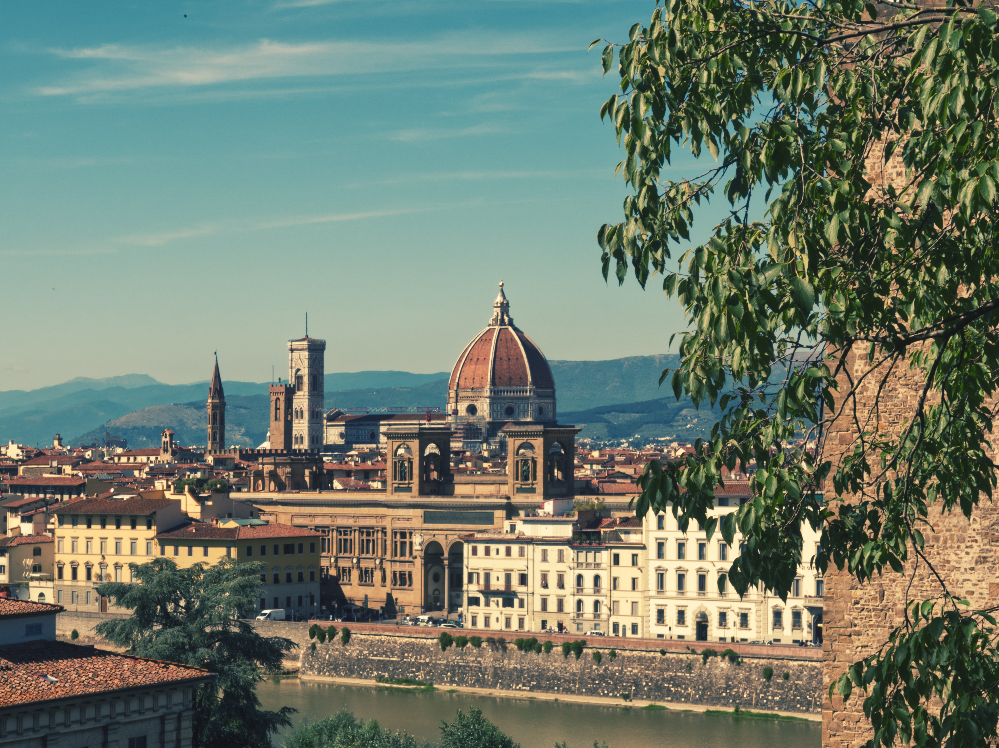

With little CO2 after BELLA ITALIA?
Exploring Italy by train?
Yes, you can, and it's easier than you think. For just under a week and a half, my girlfriend and I travelled around Italy by train - from Berlin via Milan and Florence, to Ancona on the Adriatic Sea and the capital Rome. A trip packed with the most culturally rich old towns and the most breathtaking landscapes in Italy. The train journey served not only as a new approach to reach European destinations, but also as the most environmentally friendly alternative to car and plane. In addition, my partner has an uncle who owns a beautiful holiday home near Ancona on the Adriatic Sea and when he agreed to let us stay there for a week, the decision to travel was made. We started our journey in Berlin. First destination was Frankfurt am Main. The trip there takes about 4 ½ hours and a ticket is available from 19 €. We took a train at dawn as our connecting train to Italy started at 8 am. So the trip to Frankfurt was used for sleeping.
The train from Frankfurt Central Station to Milan Central Station is a so-called trinational train, i.e. it goes through 3 countries - Germany, Switzerland and Italy. Especially the journey through the alpine landscape of Switzerland is of course an experience in itself. The landscape is exciting and simply beautiful. So the holiday actually begins with the arrival. With a long-term booking you will not pay more than 49,99 € per ticket.
Milan is the second largest city and the financial centre of Italy and one of the fashion capitals of the world next to Paris and New York. During our one-day stay we strolled through the pulsating city centre of this metropolis and let our intuition guide us. There was a lot to see. Enough to spend maybe 1-2 full days there on our next visit.
With our already booked train ticket to Florence, which does not cost more than 20 € from there, we started our next trip, which took us from the region of green Lombardy, through Emilia-Romagna with enchanting old towns like Bologna and Modena and finally to the breathtaking Tuscany. Forget every film and every picture from an Italian cookbook. Picturesque hills dotted with olive trees and cypresses create a fascinating picture that will inspire every traveller. The trip is rounded off by the dome of the Florentine Cathedral, which will be visible at some point.
In addition, my partner has an uncle who owns a beautiful holiday home near Ancona on the Adriatic Sea and when he agreed to let us stay there for a week, the decision to travel was made. We started our journey in Berlin. First destination was Frankfurt am Main. The trip there takes about 4 ½ hours and a ticket is available from 19 €. We took a train at dawn as our connecting train to Italy started at 8 am. So the trip to Frankfurt was used for sleeping.
The train from Frankfurt Central Station to Milan Central Station is a so-called trinational train, i.e. it goes through 3 countries - Germany, Switzerland and Italy. Especially the journey through the alpine landscape of Switzerland is of course an experience in itself. The landscape is exciting and simply beautiful. So the holiday actually begins with the arrival. With a long-term booking you will not pay more than 49,99 € per ticket.
Milan is the second largest city and the financial centre of Italy and one of the fashion capitals of the world next to Paris and New York. During our one-day stay we strolled through the pulsating city centre of this metropolis and let our intuition guide us. There was a lot to see. Enough to spend maybe 1-2 full days there on our next visit.
With our already booked train ticket to Florence, which does not cost more than 20 € from there, we started our next trip, which took us from the region of green Lombardy, through Emilia-Romagna with enchanting old towns like Bologna and Modena and finally to the breathtaking Tuscany. Forget every film and every picture from an Italian cookbook. Picturesque hills dotted with olive trees and cypresses create a fascinating picture that will inspire every traveller. The trip is rounded off by the dome of the Florentine Cathedral, which will be visible at some point. Florence is the capital of the Italian region of Tuscany. Florence is especially known for its numerous art and architecture masterpieces of the Renaissance. One of the most famous sights is the cathedral. The Galleria Dell 'Accademia shows Michelangelo's statue "David". In the Uffizi Gallery you can see Botticelli's painting "The Birth of Venus" and da Vinci's "The Annunciation". A paradise for every art lover. The final destination on the agenda was Rome, the capital. Due to the built fast track, the journey takes only about 2 hours and an average ticket price of 15 €. On the heels of Caesar, you will roam the region of Latium, which is characterized by the villages built on the tops of the hills in the Middle Ages. A bizarre picture, if one considers that the villages have an older history, culture and arquitecture of utmost importance. Places such as the Colosseum or the Forum Romanum bear witness to the power of the Roman Empire at that time. It is also the present centre and seat of the Roman Catholic Church and is therefore also a place of pilgrimage for people from all over the world.The capital of Italy holds 3000 years of art Florence is the capital of the Italian region of Tuscany. Florence is known above all for its numerous art and architecture masterpieces of the Renaissance. One of the most famous sights is the cathedral. The Galleria Dell 'Accademia shows Michelangelo's statue "David". In the Uffizi Gallery you can see Botticelli's painting "The Birth of Venus" and da Vinci's "The Annunciation". A paradise for every art lover.
Florence is the capital of the Italian region of Tuscany. Florence is especially known for its numerous art and architecture masterpieces of the Renaissance. One of the most famous sights is the cathedral. The Galleria Dell 'Accademia shows Michelangelo's statue "David". In the Uffizi Gallery you can see Botticelli's painting "The Birth of Venus" and da Vinci's "The Annunciation". A paradise for every art lover. The final destination on the agenda was Rome, the capital. Due to the built fast track, the journey takes only about 2 hours and an average ticket price of 15 €. On the heels of Caesar, you will roam the region of Latium, which is characterized by the villages built on the tops of the hills in the Middle Ages. A bizarre picture, if one considers that the villages have an older history, culture and arquitecture of utmost importance. Places such as the Colosseum or the Forum Romanum bear witness to the power of the Roman Empire at that time. It is also the present centre and seat of the Roman Catholic Church and is therefore also a place of pilgrimage for people from all over the world.The capital of Italy holds 3000 years of art Florence is the capital of the Italian region of Tuscany. Florence is known above all for its numerous art and architecture masterpieces of the Renaissance. One of the most famous sights is the cathedral. The Galleria Dell 'Accademia shows Michelangelo's statue "David". In the Uffizi Gallery you can see Botticelli's painting "The Birth of Venus" and da Vinci's "The Annunciation". A paradise for every art lover.